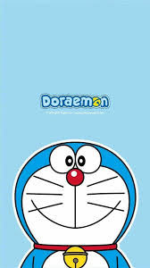

A robot cat from the 22nd century with endless gadgets and a kind heart.
Doraemon is a robot cat from the 22nd century who comes back in the past to help a boy named Nobita Nobi. He is sent by Nobita's great-great-grandson to transform Nobita's life in the current era so that his children will have a better future. Doraemon is blue, earless (due to an accident with a machine), and stores new technology inside a 4D pocket. He travels with Nobita in present-day Tokyo and is a supportive partner to Nobita's daily problems and activities. By showing so many stories, Doraemon's life consists of ordinary human emotions and next-generation technology and therefore this cartoon world is both funny and rational.
Doraemon has a huge but generous, human-like, and strict personality. He constantly tries to give Nobita good advice despite Nobita's habitual unawareness. Doraemon loves dorayaki (bean cakes) and has an easily distracted mind when food is involved. He dislikes mice, as they remind him of the accident in which he lost his ears. Though originally a robot, Doraemon shows very human emotions—he laughs, scolds, and even gets frightened. Most of the time, his task is to assist Nobita in fixing problems with devices, but often the gadgets cause more trouble.
The most iconic feature of Doraemon is his 4D pocket containing endless futuristic gadgets. Among his favorite gadgets are:
These gadgets are symbols of imagination, intelligence, and creativity, but must be used wisely. Doraemon depicts concepts of responsibility and friendship through these devices.
Doraemon is fond of Nobita and acts like an elder brother and caretaker to him. He never fails to rescue Nobita from school problems, bullies, and other daily issues. Doraemon's closest friends include Shizuka, Gian, and Suneo, even though there are constant fights with Gian and Suneo. His friendship with Shizuka resembles that of a father since he helps Nobita pursue her. Despite Nobita's repeated misuse of gadgets, Doraemon never abandons him. Through these friendships, Doraemon develops loyalty, trust, and deep bonds that showcase the values of teamwork and care.
Doraemon profile image — Wikipedia
About section image — Google Images Source